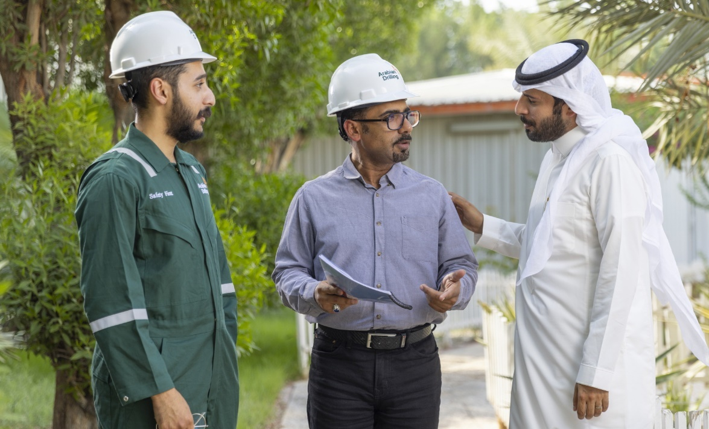

What changed when you became a supervisor?
I became responsible for more than my own task. I had to think about the whole crew, the plan, the risks, and whether everyone understood the same standard.
A supervisor story about leading crews, keeping standards visible, and helping people speak up before problems grow.

Salem progressed from operational roles into supervision by combining technical discipline with people leadership. Today, his work focuses on crew readiness, safe execution, coaching, and clear communication between field teams and support functions.
“Leadership is not only giving direction. It is creating the conditions where people know the standard, feel responsible for it, and can speak up early.”
Salem’s story shows how leadership grows from credibility in the work, consistency in behavior, and care for the people doing the job.
Read Salem’s full storySalem reflects on the habits and decisions that shape effective operational leadership.
I became responsible for more than my own task. I had to think about the whole crew, the plan, the risks, and whether everyone understood the same standard.
I try to be consistent. People need to know that safety concerns will be heard, good work will be recognized, and decisions will be explained clearly.
The pressure can be high, but the standard cannot move. A leader must stay calm, keep people aligned, and make decisions that protect both safety and performance.
Master the basics first. Be visible, listen carefully, and remember that your team learns from what you do every day, not only from what you say.
Additional prototype stories from supervisors and managers who help teams perform safely.
Talent Development Manager
Reem focuses on building capability, supporting career conversations, and helping employees see practical next steps in their development.
“Good leadership gives people clarity: what matters, how success is measured, and where they can grow next.”

HSE Supervisor
Abdullah’s leadership story centers on making safety conversations practical, visible, and part of the team’s everyday routine.
“A safety culture becomes strong when people feel comfortable raising concerns early and leaders respond seriously.”
Explore professional and management opportunities across field, technical, and corporate teams.